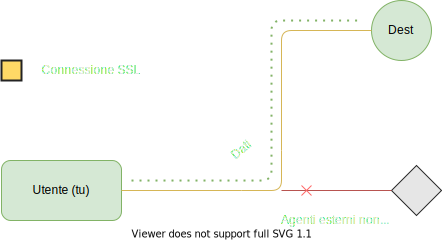

Le connessioni pubbliche e private
Durante le connessioni tra i dispositivi su una rete, il tipo di connessione può essere classificata in vari modi,
non sicura (HTTP) e sicura (HTTP Over SSL), connessioni internet o su reti point-to-point oppure connessioni pubbliche
e private.
- Una connessione pubblica è per esempio una connessione Internet, dove noi accediamo ad una rete pubblica per ricavare dati pubblici. Anche la messaggistica, anche se tra due persone, passa su una rete pubblica, ma in questa connessione pubblica, grazie alla criptazione solo i comunicanti possono accedere al dato.
- Una connessione privata invece è una connessione tra hosts che non avviene su una rete pubblica, ma su una rete privata, la quale può essere una LAN, una rete Intranet o una connessione Point-To-Point, dove quindi i comunicanti sono su un canale di comunicazione privato dove gli unici sulla rete sono i due hosts.

I protocolli per le comunicazioni
La comunicazione su rete internet, la comunicazione su rete cellulare e tutte le comunicazioni si basano tutti su dei protocolli, standard
definiti per mantenere un determinato livello di sicurezza uguale per tutti e risolvere possibili discrepanze tra protocolli, le quali
possono causare problemi di sicurezza. Vediamo alcuni protocolli
- TCP/IP per la comunicazione su rete internet, definisce lo stack di componenti (layer) utili alla comunicazione
- GSM per la comunicazione su rete cellulare, il protocollo Global Services for Mobile communication definisce tutte le regole utili alla gestione e l'esecuzione della telefonia mobile.
- P2P o Peer To Peer, definisce il protocollo dove non esiste una gerarchia client/server, ma un dispositivo può essere sia client sia server, così da creare una rete decentralizzata.
- PPTP o Point to Point Protocol, protocollo dove si crea una connessione privata e cifrata tra client/client o client/server dove i due dispositivi comunicano in modo sicuro.
- HTTP e HTTPS sono i protocolli che permettono la trasmissione di ipertesti, HTTPS, successore di HTTP, il cui nome completo è HTTP over SSL o TLS (Secure Socket Layer, più vecchio e Transport Security Layer, più sicuro e moderno) fornisce una connessione criptata tramite algoritmi di cittografia asimmetrica (es. RSA con chiavi lunghe 4096 bit)
- Telnet e SSH, sono due protocolli usati per l'accesso a shell a linea di comando su dispositivi in rete. Il primo è più vecchio, non è criptato e permette solo l'input dei comandi. SSH invece, che sta per Secure SHell, è più recente, è poi protetto in un layer di connessione criptata e permette anche lo scambio di file e il desktop remoto.